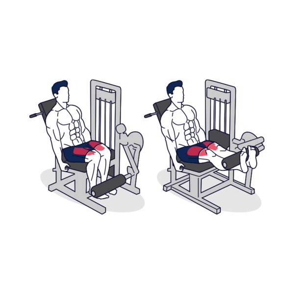

CURL DE PIERNA
Túmbate boca abajo en la máquina de "curl de piernas tumbado" con la parte trasera de los tobillos presionando el reposapiés. Agarra las asas.
Musculos: Isquios y gemelos
Rutina: 3-5 series con 10-15 repeticiones y un descanso de 3 a 5 mn
ELEVACIONES
A la vez que contraes los gemelos, levanta los talones lo más alto posible. Permanece en la posición más elevada por un momento, sintiendo bien la contracción. Luego baja lentamente los talones estirando las pantorrillas.
Musculos: Gemelos
Rutina: 3-5 series con 10-15 repeticiones y un descanso de 3 a 5 mn
EXTENSION DE PIERNA

Extiende las piernas hasta que estén completamente extendidas. Aguanta la carga un momento contrayendo los cuádriceps, y luego vuelve a la posición baja.
Musculos: Cuádriceps
Rutina: 3-5 series con 10-15 repeticiones y un descanso de 3 a 5 mn
PRENSA DE PIERNAS
Suelta el seguro manual y baja lentamente la carga llevando las rodillas hacia el pecho. Cuando las rodillas estén en un ángulo de 90°, haz una pausa momentánea y luego sube lentamente el peso. Para proteger las rodillas, detén el movimiento justo antes de que las piernas estén completamente extendidas. Durante el movimiento, no levantes los glúteos del banco.
Musculos: Muslos y los glúteos
Rutina: 2-5 series con 5-10 repeticiones y un descanso de 3 a 5 mn
SENTADILLA
Suelta el seguro manual y dobla lentamente las rodillas. Cuando las rodillas estén en un ángulo de 90°, haz una pausa durante un momento y luego levanta lentamente la carga. Mantén la espalda apoyada firmemente en el respaldo.
Musculos: Glúteos y los muslos
Rutina: 2-5 series con 5-10 repeticiones y un descanso de 3 a 5 mn
HIP THRUST

Tumbado en el banco, con los pies en el suelo, una mancuerna en cada mano. Sujeta las pesas con un agarre neutral, con los brazos extendidos sobre el pecho.
Musculos: glúteo mayor y el glúteo medio
Rutina: 2-5 series con 5-10 repeticiones y un descanso de 3 a 5 mn